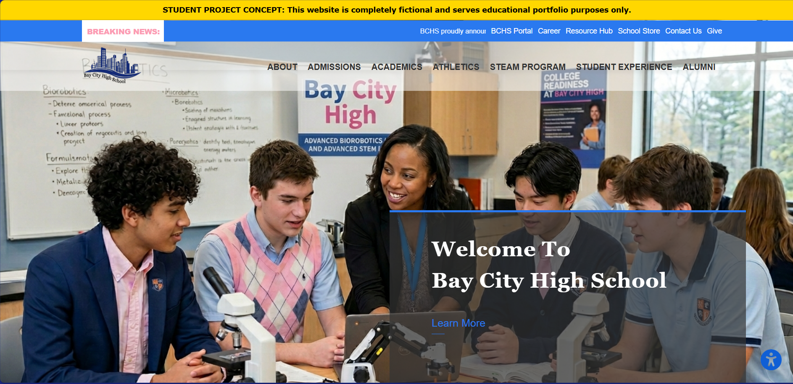
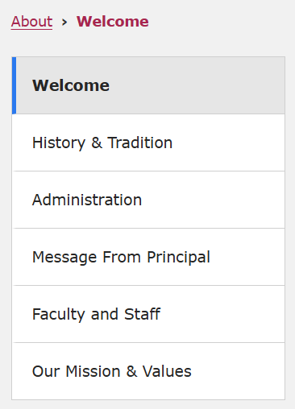
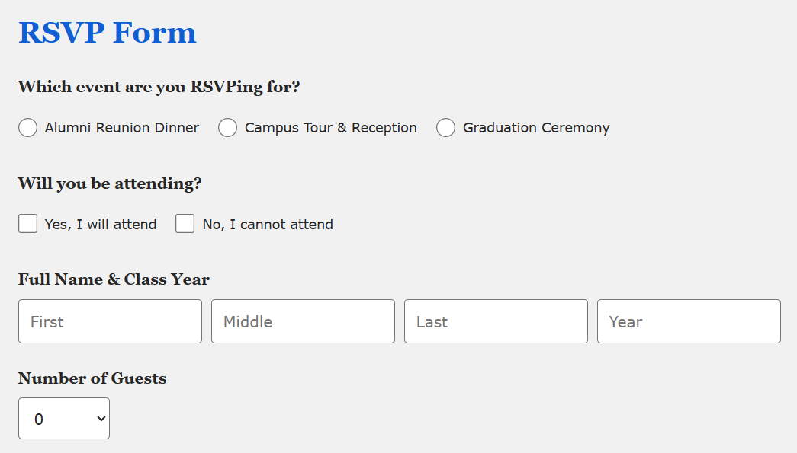

Visit the Live GitHub Demo: Bay City High School Website
Context: An ambitious multi-page web application designed for a fictional school, the Bay City High School. This project focuses on creating a seamless, simulated user experience tailored to four distinct audiences: students, parents, alumni, and faculty. Managing a platform of this scale required deep focus on information architecture, content structuring, and navigation routing before and during development. To organize the vast amount of content, tabbed layouts across all major secondary pages alongside dynamic client-side features, such as simulated event RSVP forms with guest input logic, an interactive weekly cafeteria menu toggle, image carousels, and custom profile modals were implemented. Furthermore, the project establishes a cohesive brand identity and governance framework complete with a unified colour palette, fictional concept banners, student dress code guidelines, and detailed legal disclaimers.
Goal: To create a multi-page web application for a fictional school that features simulated, interactive elements and content that realistically translates the brand identity and reputation of a concept high school community for four distinct audiences: students, parents, alumni, and faculty.
Process & Iterations:
This project did not take on any real, formal concept planning beforehand. I simply had an idea, looked at inspiration, and dove headfirst into code. Additionally, ChatGPT was utilized to handle mass content generation, in order to focus more on building the layout, tabs, and interactive client-side tools.

Step 1
Started the project with a broad vision to build a comprehensive school system, researching inspiration and mapping out the various audiences (students, parents, alumni, and faculty) before diving headfirst into the build.

Step 2
Built the expansive multi-page application by implementing tab menu layouts, routing systems, and navigation flows across all major sections so that every audience can find the content they require instantly without getting lost in another's.

Step 3
Developed dynamic client-side features– including simulated event RSVP forms, weekly cafeteria menu toggles, and profile modals. Then, consulted AI to assist in handling mass data entry.
The Challenges:
- Multi-Audience Information Hierarchy: Designing a unified web model that simultaneously serves four distinct audiences without cluttering navigation or burying critical information.
- Managing Large-Scale Information Architecture: Organizing an extensive volume of content across multiple pages, requiring secondary routing, tab menu layouts, and section hierarchy.
- Mass-Content Management: Balancing the need for rich, realistic data with code and layout development.
Key Features & Highlights:
- Multi-Audience Hubs & Tab Menu Routing: Features clear, segmented page structures and a tab menu layout to streamline navigation for students, parents, alumni, and faculty.
- Interactive Cafeteria Menu Toggle: Built a dynamic client-side tool allowing users to switch between weekly meal plans seamlessly.
- Simulated Event RSVP System: Programmed custom event registration forms, complete with guest input logic.
- Cohesive School Brand Identity: Established custom brand guidelines, including a set colour scheme, fictional concept banners, student dress code rules, and formal disclaimers.
- AI Content Mass-Production: Utilized ChatGPT to generate realistic, high-volume content for school directories and athletic rosters, ensuring a realistically simulated scale of content, while maintaining focus on interactive UI components